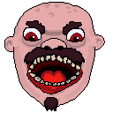

Tja! jag är Victor
Programmerare / Student / Webbutvecklare
Läs mer om mig
Om mig
Jag heter Victor, är 22 år gammal och kommer från Motala. Jag gillar programmering, allt från mjukvaruutveckling till webbprogrammering. Jag har studerat Programvaruteknik programmet vid Linnéuniversitetet i Växjö. Utöver studierna har jag har ett ganska stort teknikintresse och på fritiden gillar jag att experimentera med spelutveckling. Jag skulle nog säga att mitt favoritspråk vid tillfället är Java och jag föredrar objekt-orienterade språk, men jag är sugen på att lära mig nya som exempelvis C# men är också sugen på att lära mig äldre språk som C och C++. Utöver teknik gillar jag att gymma och friluftsliv.
Meriter och Kompetenser
Utbildning
2022 - 2025, Programvaruteknik, Linnéuniversitetet, Växjö
2019 - 2022, Naturvetenskap, KLARA Gymnasium, Linköping
Arbetslivserfarenthet
2021 - 2025 (juni-augusti) Operatör TitanX, Linköping (Sommarjobb)
Kompetenser
Programmering: Java, Python, Javascript, HTML, CSS
Verktyg: Git, VS code, Node.js
Databaser: MySQL, MongoDB
Mina Projekt

itch.io Projekt
Här finns mina projekt inom spelutveckling. Vid tillfället finns det bara 3 projekt.
De är gjorda i spelmotorn Godot.
GitHub Projekt
Här finns mina generella projekt inom programmering
Det finns inte så mycket som är public men det kommer i framtiden
Framtida projekt
Detta kommer fyllas ut i framtiden...
Framtida projekt
Detta kommer fyllas ut i framtiden...
Kontakt
Här kan jag kontaktas/följas:
Du kan kontakta mig via: victor@exempel.com
Du kan följa mig här: GitHub
Eller här: LinkedIn